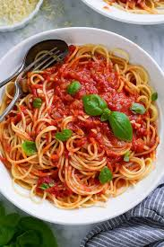

Ingredients
- 200g spaghetti
- 2 tablespoons olive oil
- 1 onion, finely chopped
- 2 garlic cloves, minced
- 400g canned tomatoes
- 2 tablespoons tomato paste
- 1 teaspoon dried oregano
- Salt and black pepper to taste
- Fresh basil leaves for garnish
- Parmesan cheese (optional)
Steps
- Cook spaghetti in salted boiling water according to package instructions. Drain and set aside.
- Heat olive oil in a pan, sauté onion and garlic until fragrant.
- Add canned tomatoes, tomato paste, oregano, salt, and pepper. Simmer for 10–15 minutes.
- Toss cooked spaghetti in the sauce until well coated.
- Serve hot, garnished with basil leaves and parmesan cheese.